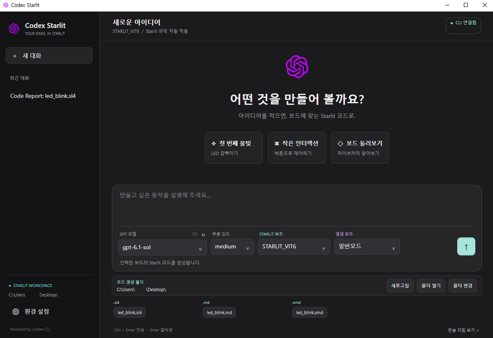
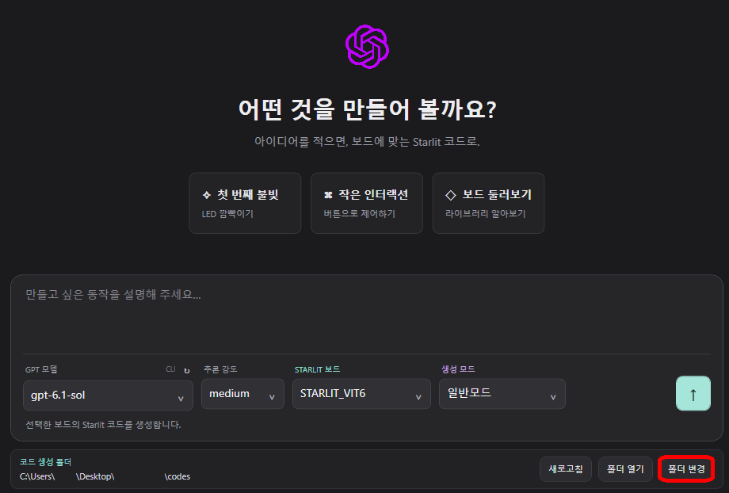
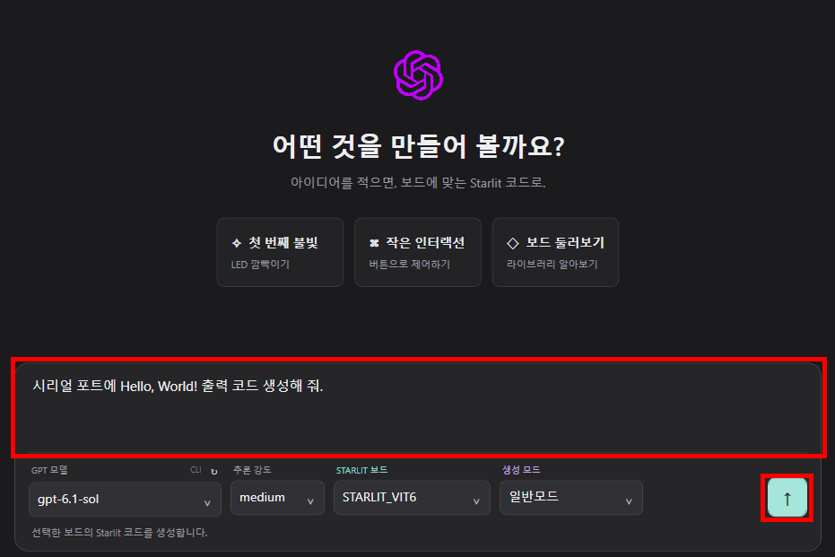
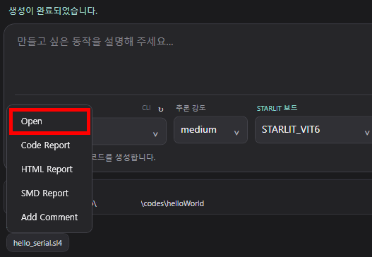

CODEX STARLIT GUIDE
Codex Starlit 사용 가이드
원하는 기능을 자연어로 설명하고, 선택한 Starlit 보드에 맞는 코드와 연동 프로젝트를 만들어 보세요.
Starlit7_Book의 Codex_Starlit 데스크톱 앱과 VS Code 확장 1.1.0 자료를 바탕으로 작성했습니다.
GUIDE 01
Codex Starlit 소개
Starlit 개발을 돕는 AI 코드 생성 도구

Codex Starlit은 Codex CLI를 이용해 사용자의 요청에 맞는 Starlit 코드를 생성하는 도구입니다. 선택한 보드의 문법과 라이브러리 안내를 참고해 코드를 작성하며, 결과를 대화와 생성 폴더에서 확인할 수 있습니다.
| 형태 | 사용 방법 |
|---|---|
| Windows 앱 | 독립된 데스크톱 창에서 대화와 생성 파일을 관리합니다. 11월 중 릴리즈 예정 |
| VS Code 확장 | VS Code 안에서 대화하고 편집기와 탐색기에서 파일 메뉴를 사용합니다. Windows x64용 VSIX가 제공됩니다. 1.1.0 확장 다운로드 |
보드별 코드 생성뿐 아니라 Android 연동 프로젝트, PC 제어용 STerM 코드, 코드 분석 보고서와 주석 추가 작업도 지원합니다.
GUIDE 02
사용방법
Starlit 언어로 코드를 생성합니다.
폴더 설정
폴더 변경을 선택하셔서 코드를 작성할 폴더를 설정해 주세요.- 주의: 경로에는 띄어쓰기가 없어야 하며, 한글 등의 문자도 사용 자제 부탁드립니다.

프롬프트 작성
- 아래의 예시와 같은 방식으로 프롬프트를 작성합니다. 그리고 오른쪽 아래에 있는 전송 버튼을 눌러주세요.
- 참고: AI 모델과 추론 강도를 상황에 알맞게 적용하시고, 타깃 보드를 고려하여 코드를 생성하세요.
시리얼 포트에 Hello, World! 출력 코드 생성해 줘.

코드 생성
- 코드 생성이 완료되었으면 생성된 파일을 열어주세요.
- 생성된 파일 선택 - Open을 누르면 VSCode에서 열 수 있으며, 타깃 보드에 업로드하시면 됩니다.(보드 설정 별도)

GUIDE 03
생성 모드
목적에 맞게 코드와 연동 프로젝트를 요청합니다
| 모드 | 생성 내용 |
|---|---|
| 일반모드 | 선택한 보드에 맞는 Starlit 코드를 생성합니다. |
| APK 연동모드 | Starlit 펌웨어와 Bluetooth 연동 Android 앱 프로젝트를 함께 생성하도록 요청합니다. Android 프로젝트는 생성 폴더의 android-app/에 둡니다. |
| 뜨따뜨따 모드 | 보드 소스와 PC에서 제어하는 STerM 소스를 같은 생성 폴더에 작성하도록 요청합니다. |
연동 모드에서는 두 프로그램이 사용할 통신 규약과 시험 방법을 LINK_PROTOCOL.md에 정리하도록 요청합니다. Bluetooth 방식, 모듈, 핀과 속도 등은 실제 사용하는 장치의 자료를 확인하세요.
APK 빌드에는 Android SDK와 Gradle 환경이 필요합니다. 뜨따뜨따 모드에는 studio/STerM/AI/Default.md가 필요하며, 보드 선택에는 실제 제어할 하드웨어 보드를 지정합니다.